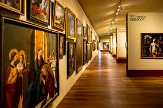
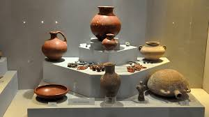

Página de Exploración Temática
Piezas de los museos
Arte Clásico y Antigüedad

Explorar colección
Impresionismo y Post-impresionismo

Explorar colección
Arte Moderno y Contemporáneo

Explorar colección
Pintura Europea (Siglos XVI-XIX)

Explorar colección
Arqueología y Etnografía

Explorar colección